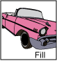
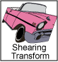
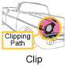

Java 2D Rendering
paint or
update method is automatically invoked with the appropriate
Graphics context.
The Java 2D API includes the
java.awt.Graphics2D class, which extends the
Graphics class to provide access to the enhanced graphics and rendering
features of the Java 2D API. These features include:
- Rendering the outline of any geometric primitive,
using the stroke and paint attributes (
drawmethod). - Rendering any geometric primitive by filling its
interior with the color or pattern specified by the paint attributes
(
fillmethod). - Rendering any text string (the
drawStringmethod). The font attribute is used to convert the string to glyphs, which are then filled with the color or pattern specified by the paint attributes. - Rendering the specified image (the
drawImagemethod).
In addition, the Graphics2D class supports the Graphics
rendering methods for particular shapes, such as drawOval
and fillRect. All methods that are represented above can be divided into two groups:
- Methods to draw a shape
- Methods that affect rendering
Graphics2D
context for following purposes:
- To vary the stroke width
- To change how strokes are joined together
- To set a clipping path to limit the area that is rendered
- To translate, rotate, scale, or shear objects when they are rendered
- To define colors and patterns to fill shapes with
- To specify how to compose multiple graphics objects
To employ Java 2D API features in the application, cast the Graphics object
passed into a component’s rendering method to a Graphics2D object. For example:
public void paint (Graphics g) {
Graphics2D g2 = (Graphics2D) g;
...
}
As the following figure shows, the Graphics2D class rendering context contains several attributes.
| The pen attribute is applied to the outline of a shape. This stroke attribute enables you to draw lines with any point size and dashing pattern and apply end-cap and join decorations to a line. | |
|  | The fill attribute is applied to a shape's interior. This paint attribute enables you to fill shapes with solid colors, gradients, and patterns. |
 |
The compositing attribute is used when rendered objects overlap existing objects. |
|  | The transform attribute is applied during rendering to convert the rendered object from user space to device-space coordinates. Optional translation, rotation, scaling, or shearing transforms can also be applied through this attribute. |
|  |
The clip,
type restricts rendering to the area
within the outline of the Shape
object used to define the clipping path. Any Shape
object that is used to define the clip.
|
|
The font attribute is used to convert text strings to glyphs. |
|
| Rendering hints specify preferences in the trade-offs between speed and quality. For example, you can specify whether antialiasing should be used, if this feature available. See also Controlling Rendering Quality. |
To learn more about transforming and compositing see the Advanced Topics in Java2D lesson.
When an attribute is set, the appropriate attribute object is passed.
As the following example shows, to change the paint attribute to a blue-green
gradient fill, you construct a GradientPaint object
and then call the setPaint method.
gp = new GradientPaint(0f,0f,blue,0f,30f,green); g2.setPaint(gp);